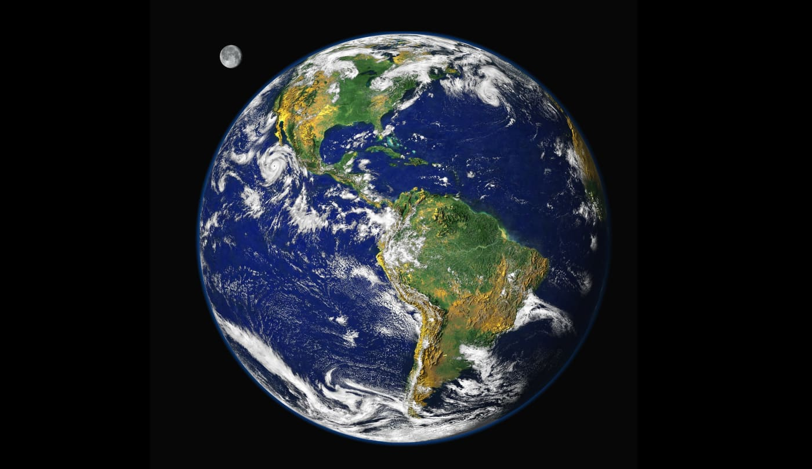
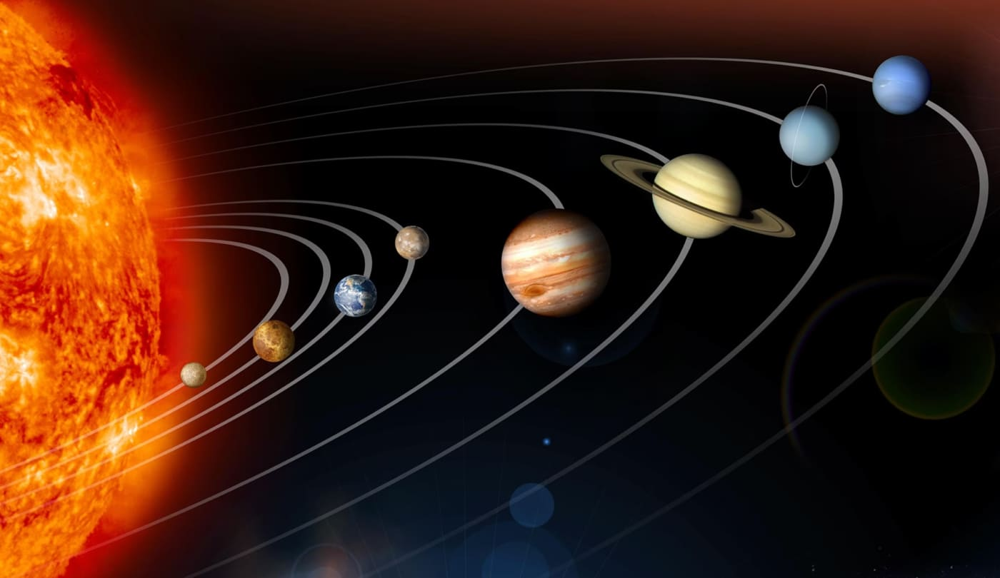
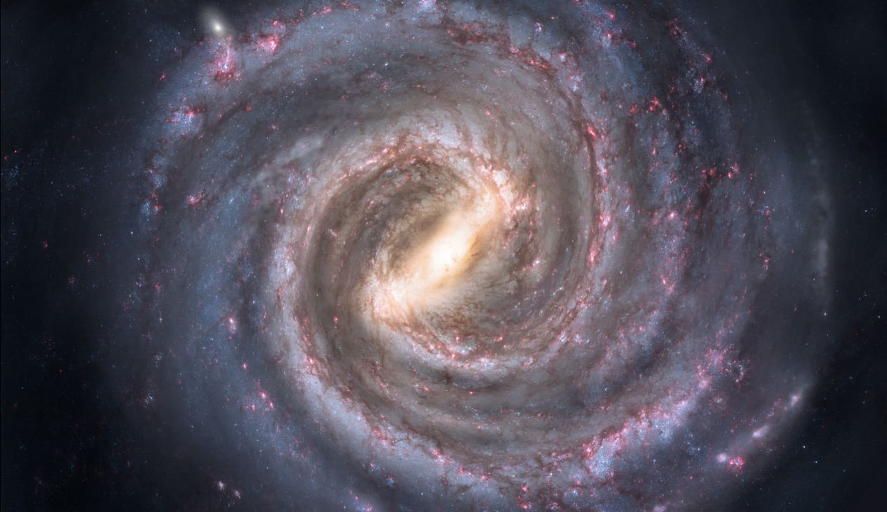
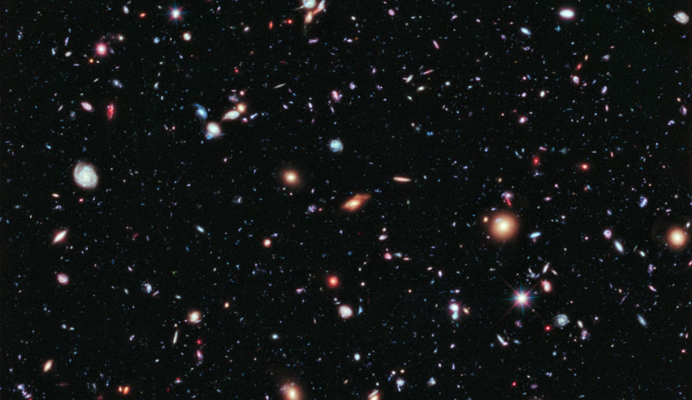

Class Notes: Heaven and Earth
5 of 141
Session 1: Our Place in the Universe
Key Takeaways
It is helpful to be aware of our own assumptions and questions and pay attention to the intent of the
biblical authors.
These early chapters of Genesis form the introduction to the Hebrew Bible. The biblical authors crafted
these stories to set the tone and expectations for what will come next.
A Modern View of the Cosmos
Many of us have probably encountered satellite photos or pictures of planet Earth, the solar system, the Milky
Way galaxy, or perhaps even other galaxies and other celestial bodies. This view of our cosmos affects the
way that we interact with Scripture. The first step to understanding the biblical authors’ view of the cosmos is
to start with our own understanding of the cosmos.
Stockli, Reto (2000). NASA
A satellite photo of planet Earth with the Moon in the background.



Class Notes: Heaven and Earth
6 of 141
NASA/JPL (2009). NASA
A rendering of the solar system.
Risinger, Nick (2009). Wikimedia Commons
A picture of our location in the Milky Way galaxy.
Hubble Telescope (2009). Hubble Deep Field Image. Wikimedia Commons.
Class Notes: Heaven and Earth
7 of 141
A photo from the Hubble Telescope of the deep field of space, displaying a variety of galaxies in the universe.
We all have an essential view of the universe—how it was formed and our place in it. And intentionally or
unintentionally, these views shape how we read the Bible. It is helpful to be aware of our preconceived
assumptions as we approach Scripture.
Reflection Question
What experiences have shaped your view of the cosmos? How has that affected your faith or understanding
of the Bible?
Class Notes: Heaven and Earth
8 of 141
Session 2: The Words “Heavens” and “Earth” in the
Hebrew Bible
Key Takeaways
Our modern views of Heaven and Earth are different from those of the biblical authors.
A common modern view of Heaven is that it is a blissful place you go when you die. A common modern
view of Earth is that it is a planet that revolves around the sun.
In the Hebrew Bible, “heavens” means "sky" and also represents God’s space. In the Hebrew Bible,
"earth" is the space of humanity and the animals.
In the Hebrew Bible, the waters are a third space that can represent chaos or death.
Tim’s Initial Understanding of Heaven and Earth
The modern conception of the words Heaven and Earth usually have a clear meaning: The Earth is the globe
and the world as a whole. The Earth is passing away, and Jesus has opened up a way for sins to be forgiven so
that Christians can go to Heaven after death. Heaven is a postmortem, spiritual dimension—a disembodied
paradise of eternal life with God. Sometimes, this is shared as the “biblical” view of reality.
However, the Bible uses the words “heaven” and “earth” in a way that not only challenges the modern view
but also points to a different biblical story.
Old Testament Texts About Heaven and Earth
Genesis 1:1 NASB
In the beginning God created the heavens and the earth.
In this passage, notice that heavens is plural and refers to the sky in contrast to earth. Heaven, in this
passage, is the literal sky above, not an afterlife dimension.
Psalm 24:1-2 NASB
1 The earth is the LORD’S, and all it contains, the world, and those who dwell in it. 2 For he has founded it
upon the seas, and established it upon the rivers.
In this passage, the earth is founded upon the seas and rivers. This is different from modern cosmology,
which understands the Earth as a sphere floating in space.
Psalm 104:1-5 NASB